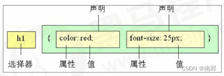
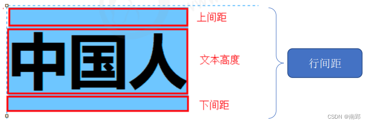
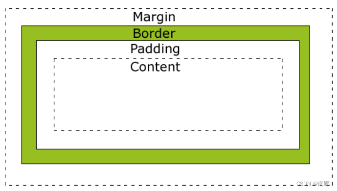
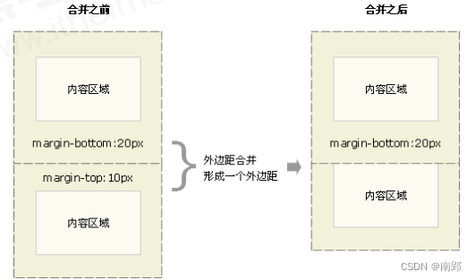
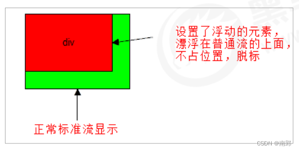
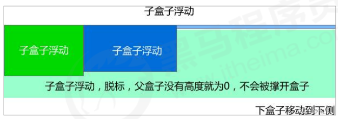

一、CSS 简介
1. CSS 和 HTML
HTML 是网友的骨架，只关注内容的语义。例如`<h1>`表示大标题，`<p>`表示段落。
早期的时候，HTML 只能做一些简单的样式，网页非常丑，而且使 HTML 代码臃肿。CSS 是 层叠样式表（Cascading Style Sheets）的简称。它也是一种标记语言。
CSS 主要用于设置 HTML 页面中的文本内容（字体、大小、对齐方式）、图片的外形（宽高、边框样式、边距等）以及版面的布局和外观显示样式。CSS 最大价值: 由 HTML 专注去做结构呈现，样式交给 CSS，即结构 ( HTML ) 与样式( CSS ) 相分离。
2. CSS 语法规范
CSS 规则由两个部分组成：选择器和一条或多条声明。

- 选择器是用于指定 CSS 样式的 HTML 标签，花括号内是对该对象设置的具体样式
- 属性和属性值以
键值对的形式出现 - 属性是对指定的对象设置的样式属性，例如字体大小、文本颜色等
- 属性和属性值之间用英文
:分开 - 多个“键值对”之间用英文
;进行区分
所有的样式，都包含在<style>标签内，表示是样式表。
<style>
p {
color: red;
font-size: 12px;
}
</style>3. CSS 代码风格
以下代码书写风格不是强制规范,而是符合实际开发书写方式。
- 展开格式（分行）
h3 {
color: pink;
font-size: 20px;
}- 空格规范（选择器和大括号中间保留空格；冒号后面保留一个空格）
h3 {
color: pink;
}- 样式选择器，属性名，属性关键字全部小写
5. emmet 语法
5.1 快速生成 HTML 结构语法
- 生成标签：直接输入标签名，按tab键即可。如：div 然后tab 键， 就可以生成
<div></div> - 生成多个相同标签：加上
*。如：div*3可以快速生成3个<div></div> - 生成父子级关系的标签：用
>。如：ul>li - 生成兄弟关系的标签：用
+。 如：div+p - 生成带有类名或者id名字的标签： 直接写
.demo或者#two，再按 tab 键 - 生成的标签名称/内容按1、2…顺序：用 自增符号
$ - 在生成的标签内部写内容：用
{}表示
5.2 快速生成 CSS 样式语法
CSS 基本采取简写形式即可。
- 比如 w200 按 tab 可以生成 width: 200px。
- 比如 lh26px 按 tab 可以生成 line-height: 26px。
二、CSS 基础选择器
选择器就是根据不同需求把不同标签选择出来。简单来说，就是用于选择标签的。
选择器分为基础选择器和复合选择器两大类。
- 基础选择器由单个选择器组成
- 基础选择器包括：标签选择器、类选择器、id 选择器和通配符选择器
1. 标签选择器
直接用 HTML 标签名作为选择器，按标签名称分类，为页面某一类标签指定统一的 CSS 样式。
语法
标签名 {
属性1： 属性值1;
属性2： 属性值2;
属性3： 属性值3;
}优点：标签选择器可以把某一标签全部选择出来，快速为同类型标签设置统一样式。
缺点：不能设置差异化样式，只能选择全部当前标签。
2. 类选择器
差异化选择不同标签，单独选一个或者某几个标签。
语法
类选择器在 HTML 中以 class 属性表示，在 CSS 中，类选择器以一个 . 号显示。
.类名 {
属性1: 属性值1;
...
}<div class="类名"> </div>记忆口诀：
样式点定义，结构类调用。一个或多个，开发最常用。
注意
- 类选择器用
.标识，后面紧跟类名。 - 类名小写，长名称或词组使用
-连接单词。不要用纯数字、中文。 - 命名要有意义。
2.1 多类名
简单来说，就是一个标签有多个名字。
使用场景：
- 一些标签元素具有相同的样式(共同的部分)，多类名可以把他们放到一个类里面。
- 这些标签都可以调用这个公共的类,然后再调用自己独有的类。
- 从而节省CSS代码,统一修改也非常方便。
<style>
.box {
width: 150px;
height: 100px;
}
.red {
background-color: red;
}
.green {
background-color: green;
}
</style>
<body>
<div class="box red">红色</div>
<div class="box green">绿色</div>
</body>语法
在标签class中书写多个类名，类名间用空格分开
<p class="class-name1 class-name2"></p>3. id选择器
id 选择器可以为标有特定 id 的 HTML 元素指定特定的样式。
语法
HTML 元素以 id 属性来设置 id 选择器，用 # 来定义。
#id名 {
属性1: 属性值1;
...
}
<div id="id名"> </div>记忆口诀：
样式 # 定义，结构 id 调用，别人切勿使用。
id 选择器与类选择器的区别
- class 类选择器好比名字，一个人可以有多个名字，同时一个名字也可以被多个人使用。（一对多，多对一）
- id 选择器好比身份证号码，每个人对应唯一的一个号码，不得重复。（一一配对）
- 类选择器在修改样式中用的最多，id 选择器一般用于页面唯一性的元素上，经常和 JavaScript 搭配使用。
4. 通配符选择器
在 CSS 中，通配符选择器使用 * 定义，它表示选取页面中所有元素（标签）。
* {
属性1: 属性值1;
...
}特殊情况（常见）使用：
* {
margin: 0;
padding: 0;
}5. 基础选择器总结
| 基础选择器 | 作用 | 特点 | 使用情况 | 用法 |
|---|---|---|---|---|
| 标签选择器 | 选中所有相同标签 | 不能差异化选择 | 较多 | p{color:red;} |
| 类选择器 | 选出一个或多个标签 | 可以根据需求选择 | 最多 | .nav {color: red;} |
| id选择器 | 一次只能选中一个标签 | 一一配对 | 一般配合js使用 | #nav {color: red;} |
| 通配符选择器 | 选择所有标签元素 | 选择的太多，有部分不需要 | 特殊情况使用 | * {color: red; } |
三、CSS 复合选择器
复合选择器是建立在基础选择器之上，对基本选择器进行组合形成的。
常用的复合选择器包括：后代选择器、子选择器、并集选择器、伪类选择器等等
1. 后代选择器（重要）
后代选择器又称为包含选择器，可以选择父元素里的子元素。写法是将外层标签写在前面，内层标签写在后面，中间空格分开。
语法
元素1 元素2 { 样式声明; }- 上述语法表示选择元素1里面的所有元素2（后代元素）。
- 元素2可以是儿子，也可以是孙子等，只要是元素1的后代即可。
- 元素1 是父级，元素2 是子级，最终选择的是元素2
2. 子选择器（重要）
子元素选择器（子选择器）只能选择作为元素作为元素的最近一级子元素。简单理解就是选亲儿子。
语法
元素1 > 元素2 { 样式声明; }- 上述语法表示选择元素1里面的所有直接后代（子元素）元素2。
- 元素2必须是亲儿子，其孙子、重孙之类都不归他管。
- 元素1是父级，元素2是子级，最终选择的是元素2
3. 并集选择器（重要）
并集选择器可以选择多组标签，同时为他们定义相同的样式。通常用于集体声明。
并集选择器是各选择器通过英文逗号 , 连接而成，任何形式的选择器都可以作为并集选择器的一部分。
语法
元素1, 元素2 { 样式声明; }4. 伪类选择器（重要）
伪类选择器用于向某些选择器添加特殊的效果。
伪类选择器书写最大特点是用冒号 : 表示。
伪类选择器种类多，比如链接伪类选择器、结构选择器等。
4.1 链接伪类选择器
a:link /*选择所有未被访问的链接*/
a:visited /*选择所有已被访问的链接*/
a:hover /*选择鼠标指针位于其上的链接*/
a:active /*选择活动链接（鼠标按下未弹起的链接）*/注意事项
- 确保样式生效，要按照 LVHA 的顺序声明：link,visited,hover, active。
- a 链接在浏览器中有默认样式，所以实际开发都需要给链接单独指定样式。
4.2 focus 伪类选择器
:focus 伪类选择器用于获取焦点的表单元素。
焦点就是光标，一般情况 <input> 类表单元素才能获取，因此这个选择器也主要针对表单元素来说。
input:focus {
background-color: yellow;
}4.3 其他标准伪类选择器
1.first-child、last-child、nth-child(n)
:first-child表示父元素的第一个子元素。:last-child表示父元素的最后一个子元素。:nth-child(an+b)首先找到所有当前元素的兄弟元素，然后按照位置先后顺序从 1 开始排序，选择的结果为 CSS 伪类:nth-child括号中表达式(an+b)匹配到的元素集合(n=0，1，2，3...)
:not(p):not()用来匹配不符合一组选择器的元素。由于它的作用是防止特定的元素被选中，它也被称为反选伪类（negation pseudo-class）。::after (:after)::after用来创建一个伪元素，作为已选中元素的最后一个子元素。通常会配合content属性（必有该字段）来为该元素添加装饰内容。这个虚拟元素默认是行内元素。
.sad::after {
·content: "";
background-color: green;
}::before (:before)::before用来创建一个伪元素，作为已选中元素的第一个子元素。通常会配合content属性（必有该字段）来为该元素添加装饰内容。这个虚拟元素默认是行内元素。 使用::before伪元素的一个简单示例就是用于加入引号。
<q>一些引用</q>, 他说, <q>比没有好。</q>.
q::before {
content: "«";
color: blue;
}
q::after {
content: "»";
color: red;
}5. 复合选择器总结
| 选择器 | 作用 | 特征 | 使用情况 | 隔开符号及用法 |
|---|---|---|---|---|
| 后代选择器 | 用来选择后代元素 | 可以是子孙后代 | 较多 | 符号是空格 .nav a |
| 子选择器 | 选择最近一级元素 | 只能选亲儿子 | 较少 | 符号是大于 .nav>p |
| 并集选择器 | 选择某些相同样式的元素 | 可以用于集体声明 | 较多 | 符号是逗号，.nav, a |
| 链接伪类选择器 | 选择不同状态的链接 | 跟链接相关 | 较多 | 重点记住a{}和a:hover{} |
| focus选择器 | 选择获得光标的表单 | 跟表单相关 | 较少 | 记住input:focus用法 |
四、CSS 属性
1. CSS 字体属性
CSS fonts (字体)属性用于定义字体系列、大小、粗细、和文字样式（如斜体）。
1.1 字体系列
CSS 使用 font-family 属性定义文本字体系列。
body {
font-family: "Microsoft YaHei", Arial, Helvetica, sans-serif;
}注意：
- 尽量使用默认字体，保证不同浏览器的兼容性。（谷歌浏览器默认字体为微软雅黑）
- 最常见的几个字体：
body {font-family: 'Microsoft YaHei',tahoma,arial,'Hiragino Sans GB'; } - 支持同时定义多个字体，从左至右优先级，以防因电脑未装字体而无法正常显示。
1.2 字体大小
CSS 使用 font-size 属性定义字体大小。
body {
font-size: 16px;
}- 谷歌浏览器默认是
16px - 不同浏览器可能默认显示的字号大小不一致，我们尽量给一个明确值大小，不要默认大小
- 可以给
body指定整个页面文字大小
1.3 字体粗细
CSS 使用 font-weight 属性设置字体粗细
p {
font-weight: 700;
}| 属性值 | 描述 |
|---|---|
| normal | 默认值（不加粗） |
| bold | 定义粗体（加粗） |
| 100-900 | 400 等价于 normal，700 等价于 bold，无单位 |
1.4 文字样式
CSS 使用 font-style 属性设置文本风格。
p { font-style: italic; }| 属性值 | 描述 |
|---|---|
| normal | 正常显示 |
| italic | 斜体 |
注意：
平常很少给字体加斜体，而是给斜体标签（em,i）改为不倾斜字体。
1.5 字体复合属性写法
将各种字体属性写在同一选择器下，节约代码。
规则：严格遵守顺序，且 font-size 和 font-family 必须有。
body {
font: font-style font-weight font-size/line-hight font-family;
}1.6 字体属性总结
| 字体属性 | 表示 | 注意 |
|---|---|---|
| font-family | 字体 | 按照团队约定来写 |
| font-size | 字号 | 单位是px |
| font-weight | 字体粗细 | 400=normal,700=bold |
| font-style | 字体样式 | italic，normal，常用 normal |
| font | 属性连写 | 顺序不能变，字体和字号属性必须有 |
2. CSS 文本属性
CSS text(文本)属性定义文本外观，比如颜色、对齐、装饰、缩进、行间距等。
2.1 文本颜色
color 属性定义文本颜色。
div {
color: red;
}| 表示颜色 | 属性值 |
|---|---|
| 预定义的颜色值 | red,green,pink |
| 十六进制（常用) | #FF0000，#FF6600 |
| RGB 代码 | rgb(255,0,0) |
2.2 装饰文本
text-decoration 属性规定添加到文本的修饰。可以给文本添加下划线、删除线、上划线等。
text-decoration: underline;| 属性值 | 描述 |
|---|---|
| none | 默认，无装饰（最常用） |
| underline | 下划线，a 标签自带（常用） |
| overline | 上划线。（几乎不用） |
| line-through | 删除线。（不常用） |
2.3 对齐文本
text-align 属性用于设置元素文本内容的对齐方式。
div {
text-align: center;
}| 属性值 | 解释 |
|---|---|
| left | 左对齐（默认） |
| right | 右对齐 |
| center | 居中对齐 |
2.4 文本缩进
text-indent定义段落首行缩进。
p {
text-indet: 5px;
}em 是一个相对单位，1em 就是一个字符所占大小。当 text-indent=2em，则恰好缩进两个文字。
2.5 行高
line-height 设置行间的距离，行间距=文本高度+上间距+下间距
p {
line-height: 26px;
}
2.5.1 单行文字垂直居中的小技巧
CSS 没有给我们提供文字垂直居中的代码. 这里我们可以使用一个小技巧来实现。
解决方案：让文字的行高等于盒子的高度。
原理分析：行高=文字本身高度+上空隙+下空隙=盒子高度
当行高小于盒子高度，则文字偏上；当行高大于盒子高度，文字偏下。
2.6 文本属性总结
| 属性 | 表示 | 注意 |
|---|---|---|
| color | 文本颜色 | 通常十六进制缩写 |
| text-decoration | 文本装饰 | 添加下划线underline，取消下划线none |
| text-align | 文本对齐 | 可以设定文字水平的对齐方式 |
| text-indent | 文本缩进 | 通常用于段落首行缩进2个字的距离，记住 text-indent: 2em; |
| line-height | 行高 | 控制行与行之间的距离 |
3. CSS背景属性
CSS 背景属性可以给元素添加背景样式。
背景属性可以设置背景颜色、背景图片、背景平铺、背景图片位置、背景图像固定等。
3.1 背景颜色
background-color 定义了元素的背景颜色。
background-color: 颜色值;一般而言，颜色默认值是 transparent（透明），我们也可以指定背景颜色为透明色或其他色。
3.1.1 背景色半透明
CSS3 提供 background: rgba(r,g,b,a) 属性设置图片透明度。
background-color: rgba(0, 0, 0, .3);注意：
- 背景半透明是指盒子背景半透明，盒子里面的内容不受影响。
3.2 背景图片
background-image 属性描述了元素的背景图像，实际开发用于 logo 或者一些装饰性开发的小图片或者是超大的背景图片，优点是便于控制位置。（也用于精灵图）
background-image: none（默认无背景图）| url(图片url) （使用绝对或相对地址指定图片）;3.3 背景平铺
若需要在 HTML 页面上对背景图进行平铺，可以使用 background-repeat 属性。
background-repeat: repeat(默认) | no-repeat | repeat-x | repeat-y;| 参数值 | 作用 |
|---|---|
| repeat | 背景图像在纵向和横向上平铺（默认） |
| no-repeat | 背景图像不平铺 |
| repeat-x | 背景图像在横向上平铺 |
| repeat-y | 背景图像在纵向上平铺 |
3.4 背景图像固定
background-attachment 属性设置背景图像是否随着页面其余部分滚动。
background-attachment 后期可以制作视差滚动效果。
background-attachment: scroll | fixed;| 参数 | 作用 |
|---|---|
| scroll | 背景图像随着对象内容滚动 |
| fixed | 背景图像固定 |
3.5 背景图片位置
background-position 可以改变图片在背景中的位置。
background-position: x y;参数代表的意思是：x 坐标和 y 坐标。 可以使用 方位名词 或者 精确单位
| 参数值 | 说明 |
|---|---|
| length | 百分数 / 由浮点数字和单位字符组成的长度值 |
| position | top / center / bottom / left / center / right 方位名词 |
1.参数是方位名词
- 若两个值都是方位名词，则两个值前后顺序无关，比如
left top和top left效果一致。 - 若只指定了一个方位名词，另一个值省略，则第二个值默认居中对齐。
2.参数是精确单位
- 第一个必定是 x 坐标，第二个是 y 坐标
- 若只指定一个数值，那该值一定是x坐标，另一个默认垂直居中
3.参数是混合单位
- 若是混合单位，则第一个值是 x 坐标，第二个值是 y 坐标。
3.6 背景属性复合写法
简化代码，将属性写在同一个属性 background 下。
当使用简写属性时，没有特定的书写顺序，一般习惯约定顺序为：
background：背景颜色 背景图片地址 背景平铺 背景图像滚动 背景图片位置
background: transparent url(image.jpg) repeat-y fixed top;3.7 背景属性总结
| 属性 | 作用 | 值 |
|---|---|---|
| background-color | 背景颜色 | 颜色值/十六进制/RGB代码 |
| background-image | 背景图片 | url(图片路径) |
| background-repeat | 背景平铺 | repeat(默认)/no-repeat/repeat-x/repeat-y |
| background-attachment | 背景固定 | scroll/fixed |
| background-position | 背景位置 | x,y坐标 |
| 背景复合写法 | 简化书写 | 背景颜色 背景图片地址 背景平铺 背景图像滚动 背景图片位置 |
五、元素显示模式
元素显示模式就是元素（标签）以什么方式进行显示，比如<div>自己占一行，比如一行可以放多个span。
1. 块元素
常见的块元素有 h1-h6、p、div、ul、ol、li等，典型块元素是 div。
块级元素的特点：
- 独占一行。
- 高度、宽度、外边距以及内边距都可以控制。
- 宽度默认是容器（父级宽度）的 100%。
- 是一个容器及盒子，里面可以放行内或块级元素。
注意：
- 文字类的标签（主要用于存放文字）内不能放块级元素。
- 文字类标签有
p，h1-h6，里面不能放块级元素，特别不能放div元素。
2. 行内元素
常见行内元素：a、strong、b、em、i、del、s、ins、u、span，典型行内元素是 span，行内元素也叫内联元素。
行内元素的特点：
- 相邻行内元素在一行上，之间存在空白缝隙，一行可以显示多个。
- 高、宽直接设置是无效的。
- 默认宽度就是它本身内容宽度。
- 行内元素只能容纳文本或其他行内元素。
注意
a链接里面不能放链接- 特殊情况链接
a里面可以放块级元素，但是给a转换一下块级模式最安全。
3. 行内块元素
在行内元素中有几个特殊标签——img, input、td，它们同时具有块元素和行内元素的特点。有些资料称为行内块元素。
特点：
- 和相邻行内元素（行内块）在一行上，之间存在空白缝隙，一行可以显示多个（行内元素特点）。
- 默认宽度是本身内容宽度（行内元素特点）。
- 高度、行高、外边距、内边距都可以控制（块级元素特点）。
4. 元素显示模式转换
特殊情况下，需要将一个元素的模式转换为另外一种模式，使其具有另外一种模式的特性。
比如想要增加链接 a 的触发范围。
- 行内->块级
a {
display: block;
}- 块级->行内
div {
display: inline;
}- 行内/块级-> 行内块元素
span {
display: inline-block;
}5. 元素显示模式总结
| 元素模式 | 元素排列 | 设置样式 | 默认宽度 | 包含 |
|---|---|---|---|---|
| 块级元素 | 一行只能放一个块级元素 | 可以设置高度宽度 | 容器的 100% | 可以包含任何标签 |
| 行内元素 | 一行可以放多个行内元素 | 不可以设置宽度高度 | 本身内容宽度 | 容纳文本或者其他行内元素 |
| 行内块元素 | 一行可以放置多个行内块元素 | 可以设置高度宽度 | 本身内容宽度 |
六、CSS 引用方式
按照 CSS 书写的位置不同，CSS 样式表可以分为三大类：
- 行内样式表（行内式）
- 内部样式表（嵌入式）
- 外部样式表（链接式）
1. 行内样式表
行内样式表（内联样式表）是在元素标签内部的 style 属性中设定 CSS 样式，适合修改简单样式。
<div style="color: red; font-size: 12px">行内样式表</div>2. 内部样式表
将 CSS 代码写在 HTML 页面内部，单独放在一个 <style> 标签中。
<style>理论上可以放在 HTML 文档中任何一个地方，一般放在<head>标签中。- 方便控制整个页面中的元素样式。
练习时使用，实际开发不用。
3. 外部样式表
实际开发中都是外部样式表，适用于样式比较多的情况。
核心：样式单独写到 CSS 文件中，再将 CSS 文件引入到 HTML 页面中。
引入外部样式表分为两步：
- 新建一个后缀名为 .css 的样式文件，把所有 CSS 代码都放入此文件中。
- 在 HTML 页面中，使用 标签引入这个文件。
<link rel="stylesheet" href="css文件路径" />- rel：定义当前文档与被链接文档之间的关系，在这里需要指定为”stylesheet”，表示被链接的文档是一个样式表文件。
- href：定义所链接外部样式表文件的URL，可以是相对路径，也可以是绝对路径。
七、CSS三大特性
1. 层叠性
相同选择器设置相同的样式，此时一个样式就会覆盖另一个冲突的样式。层叠性主要解决样式冲突的问题。
层叠性原则：
- 样式冲突：遵循的原则是就近原则，哪个样式离结构近，就执行哪个样式
- 样式不冲突，不会层叠
2. 继承性
CSS 中子标签会继承父标签的某些样式，如文本颜色和字号。
- 恰当使用继承可以简化代码，降低 CSS 的复杂性
- 子元素可以继承父元素的样式（text-, font-, line-这些元素开头的可以继承，以及 color 属性）
- 不继承width、height、内外边距
2.1 行高的继承性
body {
font: 12px/1.5 Microsoft Yahei;
}- 行高可以跟单位也可以不跟
- 如果子元素没有设置行高，则会继承父元素的行高为 1.5
- 此时子元素的行高是：当前子元素的文字大小
*1.5 - body 行高 1.5 这样写法最大优势就是里面的子元素可以根据文字大小自动调整行高
3. 优先级
当一个元素指定多个选择器时，就会有有优先级的产生。
- 选择器相同，则执行层叠性
- 选择器不同，则根据选择器权重执行
选择器权重：
important>style=””>id>伪类>class>元素>*>浏览器>继承
| 选择器 | 选择器权重 |
|---|---|
继承或者* |
0,0,0,0 |
| 元素选择器 | 0,0,0,1 |
| 类选择器，伪类选择器 | 0,0,1,0 |
| id 选择器 | 0,1,0,0 |
行内样式 style="" |
1,0,0,0 |
!important |
∞ 无穷大 |
!important写法： |
p {
color: pink !important;
}- 权重是有4组数字组成，但是不会有进位。可以理解为类选择器永远大于元素选择器，以此类推..
- 继承的权重为 0，如果该元素没有直接选中，不管父元素权重多高，子元素得到的权重都是 0。
a链接，浏览器默认指定了一个样式（蓝色，下划线），不会继承父级样式。
复合选择器权重的叠加
权重可以叠加，需要计算权重，但是没有进位。
- div ul li ——> 0,0,0,3
- .nav ul li ——> 0,0,1,2
- a:hover —–—> 0,0,1,1
- .nav a ——> 0,0,1,1
网页布局过程：
- 准备网页元素，网页元素基本都是盒子 box
- 利用 CSS 设置好盒子样式，然后摆放到相应位置。
- 往盒子里放东西。
网页布局的核心本质：利用 CSS 摆盒子。
CSS 提供了三种传统布局方式：
- 普通流（标准流）
- 浮动
- 定位
所谓的标准流，就是标签按照规定好的默认方式排列（最基本的布局方式）。
- 块级元素会独占一行，从上到下顺序排列 常用元素：div、hr、p、h1-h6、ul、ol、dl、form、table
- 行内元素会按照顺序，从左到右顺序排列，碰到父元素边缘则自动换行。 常用元素：span、a、i、em
八、盒子模型
1. 盒子模型的组成
CSS 盒子模型本质上是一个盒子，封装周围的 HTML 元素。
包括：边框、外边距、内边距和实际内容。

2. 边框（border）
border 可以设置元素边框。边框有三个组成：border-width、border-style、border-color
语法：
/*属性可连写*/
border: border-width || border-style || border-color;| 属性 | 作用 |
|---|---|
| border-width | 定义边框粗细，单位 px |
| border-style | 边框样式：none(默认无边框)、solid(单实线)、dashed(虚线)、dotted(点线) |
| border-color | 边框颜色 |
边框属性分写：
/*注意层叠性*/
border-top: 1px solid red;2.1 表格的边框合并
border-collapse 属性控制浏览器绘制表格边框的方式。它可以使相邻单元格的边框合并在一起。
语法：
border-collapse: collapse;2.2 圆角边框
CSS3 新增 圆角边框 属性，盒子可以变成圆角。
border-radius 属性用于设置元素的外边框圆角。
语法：
border-radius: length;原理：
（椭）圆与边框的交集形成的圆角效果。
参数：
- 参数值可以为数值或百分比的形式
- 若是正方形，想要设置一个圆，则将数值修改为高度或者宽度的一般即可，或者直接写为 50%
- 简写属性，跟四个值，分别代表左上角、右上角、右下角、左下角
- 分开来写：
border-top-left-radius、border-top-right-radius、border-bottom-right-radius、border-bottom-left-radius
2.3 边框会影响盒子大小
边框会额外增加盒子的实际大小，因此有两种方案解决。
- 测量盒子大小的时候，不量边框。
- 若测量的时候包含了边框，则需要 width/height-边框宽度。
3. 内边距（padding）
padding 属性设置内边距，即边框与内容之间的距离。
padding-left: 左内边距padding-right: 右内边距padding-top: 上内边距padding-bottom: 下内边距
padding 属性简写：
| 值的个数 | 表达意思 |
|---|---|
| padding: 5px; | 上下左右5 |
| padding: 5px 10px; | 上下5 左右10 |
| padding: 5px 10px 20px; | 上5 左右10 下20 |
| padding: 5px 10px 20px 30px; | 上5 右10 下20 左30 |
3.1 内边距会影响盒子大小
当给盒子指定了 padding 值以后，发生了两件事情：
- 内容和边框有了距离，增加内边距
- padding 值影响了盒子实际大小
也就是说，当盒子已经有了宽度和高度，再指定内边距，会撑大盒子。（如何盒子本身没有指定width/height属性, 则此时padding不会撑开盒子大小）
要保证盒子和效果图一样大，则让 width/height-多出来的内边距大小。
4. 盒子大小变动解决方案
在设置了一个盒子的 width/height 后，再设置其 border/padding 会影响盒子实际大小。当进行响应式布局时，这个尤其烦人。
box-sizing 属性可以被用来调整这些表现。
content-box是默认值。如果你设置一个元素的宽为100px，那么这个元素整体会有100px宽，并且任何边框和内边距的宽度都会被增加到最后绘制出来的元素宽度中。box-sizing: content-box;border-box告诉浏览器：你想要设置的边框和内边距的值是包含在width内的。也就是说，如果你将一个元素的width设为100px，那么这100px会包含它的border和padding，内容区的实际宽度是width减去(border + padding)的值。大多数情况下，这使得我们更容易地设定一个元素的宽高。box-sizing: border-box;尺寸计算公式：
width = border + padding + 内容的宽度、height = border + padding + 内容的高度
5. 外边距（margin）
margin 属性用于设置外边距，即控制盒子与盒子之间的距离。
margin-left: 左外边距margin-right: 右外边距margin-top: 上外边距margin-bottotm: 下外边距
margin 简写方式与 padding 一致。
5.1 外边距典型应用
外边距可以让块级盒子 水平居中，但是必须满足两个条件：
- 盒子必须指定宽度（width）
- 盒子左右的外边距都设置为
auto
.header {
width: 960px;
margin: 0 auto;
}5.2 外边距合并
使用 margin 定义块元素的垂直外边距时，可能会出现外边距的合并。
5.2.1 上下相邻块元素垂直外边距的合并
当上下相邻块元素相遇时，若上面的元素有下外边距，下面的元素有上外边距，则他们之间的垂直间距不是 margin-bottotm 与 margin-top 之和。取两个值中的较大者这种现象被称为相邻元素垂直外边距的合并。
解决方案：尽量只给一个盒子添加margin值。
![[Pasted image 20221209144024.png]]
5.2.2 嵌套块元素垂直外边距的塌陷
对于两个嵌套关系的块元素，父元素有上外边距同时子元素也有上外边距，此时父元素会塌陷较大的外边距值。
解决方案：
- 为父元素定义上边框
- 为父元素定义上内边距
- 为父元素添加
overflow:hidden

6. 清除内外边距
网页元素很多都带有默认内外边距，而且不同浏览器默认的也不一致，因此在布局前，要先清除网页元素的内外边距。
语法：
* {
margin: 0;
padding: 0;
}注意：行内元素为了照顾兼容性，尽量只设置左右内外边距，不要设置上下内外边距（不起效果）。但是转换为块级和行内块元素就可以设置。
7. 盒子阴影
CSS3 新增盒子阴影，使用 box-shadow 属性。
语法
bxo-shadow: h-shadow v-shadow blur spread color inset;| 值 | 描述 |
|---|---|
| h-shadow | 必需，水平阴影的位置，允许负值 |
| v-shadow | 必需，垂直阴影的位置，允许负值 |
| blur | 可选，模糊距离 |
| spread | 可选，阴影的尺寸 |
| color | 可选，阴影的颜色 |
| inset | 可选，将外部阴影改为内部阴影（默认是外部阴影） |
box-shadow: 10px 10px 10px -4px rgba(0, 0, 0, .3);注意：
- 默认是外阴影，但是不可以写这个单词（outset）
- 盒子阴影不占空间，不会影响其他盒子排列
九、浮动
1. 浮动相关概念
1.1 为什么需要浮动
如何让多个块级盒子(div)水平排列成一行？
比较难，虽然转换为行内块元素可以实现一行显示，但是他们之间会有大的空白缝隙，很难控制。如何实现两个盒子的左右对齐？
总结：很多布局效果，标准流没办法完成，此时就可以利用浮动完成布局。浮动可以改变元素标签默认排列方式。
浮动最典型应用：让多个块级元素一行显示。
网页布局第一准则：多个块级元素纵向排列找标准流，多个块级元素横向排列找浮动。
网页布局第二准则：先设置盒子大小，再设置盒子位置。
1.2 什么是浮动
float 属性用于创建浮动框，将其移动到一边，直到左边缘或右边缘及包含块或另一个浮动框的边缘。
语法：
选择器 { float: 属性值; }| 属性值 | 描述 |
|---|---|
| none | 元素不浮动 |
| left | 元素向左浮动 |
| right | 元素向右浮动 |
1.3 浮动特性（重点）
加了浮动之后的元素，会具有一些特性。
- 浮动元素会脱离标准流（脱标）
- 浮动元素会一行内显示并且元素顶部对齐
- 浮动的元素会具有行内块元素的特性
1.3.1 重要特性
脱离文档流的控制（浮）移动到指定位置（动）（俗称脱标）。浮动的盒子不再保留原先的位置。
如果多个盒子都设置了浮动，则它们会按照属性值一行显示并且顶端对齐排列。 浮动的元素是相互贴在一起的（没有间隙），若父级宽度放不下这些浮动的盒子，多出的盒子会另起一行对齐。
浮动元素具有行内块元素特性。 任何元素都可以浮动，元素添加浮动后都具有行内块元素性质。
- 若块级元素没有设置宽度，则默认和父级一样宽。但添加浮动后，大小根据内容来决定
- 浮动盒子中间无间隙，紧挨着
- 行内块元素同理
1.3.2 浮动布局注意点
1. 浮动和标准流的父盒子搭配
先用标准流的父元素排列上下位置，之后内部子元素采取浮动排列左右位置。
2. 一个元素浮动了，理论上其余兄弟元素也要浮动
一个盒子里有多个盒子，其中一个盒子浮动，其他兄弟也应该浮动，防止引起问题。
浮动的盒子只会影响浮动盒子后面的标准流，不会影响前面的标准流。
2. 清除浮动
2.1 为什么需要清除浮动
由于父级盒子很多情况下，不方便给高度（产品可能有很多很多；新闻页面不知道有多少字不方便给高度）。
盒子浮动不占有位置，若父级盒子高度为 0 时，就会影响下面的盒子，对后面元素排版产生影响。

2.2 清除浮动的本质
- 清除浮动的本质是清除浮动元素造成的影响
- 如果父盒子本身具有高度，则不需要清除浮动
- 清除浮动之后，父级会根据浮动的子盒子自动检测高度，父级有了高度，就不会影响下面的标准流了。
语法：
选择器 {
clear: 属性值;
}| 属性值 | 描述 |
|---|---|
| left | 不允许左侧有浮动元素 |
| right | 不允许右侧有浮动元素 |
| both | 同时清除左右两侧浮动 |
| 清除浮动策略：闭合浮动 |
2.3 清除浮动的方法
2.3.1 额外标签法（隔墙法）
额外标签法是在最后一个浮动元素末尾添加一个空块级元素，给其赋以属性 clear: both;。(不常用)
语法：
<style>
.clear {
clear: both;
}
</style>
<div class="clear"></div>- 优点：通俗易懂，书写方便
- 缺点：添加许多无意义的标签，结构化差
2.3.2 父级添加 overflow 属性
可以给父级添加 overflow 属性，将其属性设置为 hidden、auto或scroll。
注意是给父元素添加代码：
.box {
overflow: hidden;
}- 优点：代码简洁
- 缺点：无法显示溢出部分
2.3.3 :after 伪元素法
:after 方式是额外标签法的升级版。给父元素添加（常用）
.clearfix:after {
content: "";
display: block;
height: 0;
clear: both;
visibility: hidden;
}
.clearfix {
/*IE6、7专有*/
*zoom: 1;
}优点：没有增加标签，结构更简单
2.3.4 双伪元素清除浮动
给父元素添加（常用）
.clearfix:before,
.clearfix:after {
content: "";
display: table;
}
.clearfix:after {
clear: both;
}
.clearfix {
*zoom: 1;
}3. 学成在线案例
3.1 CSS属性书写顺序

3.2 页面布局分析
为了提高网页制作的效率，布局时通常有以下的布局流程：
- 必须确定页面的版心（可视区），我们测量可得知。
- 分析页面中的行模块，以及每个行模块中的列模块。其实页面布局，就是一行行罗列而成的。
- 制作 HTML 结构。我们还是遵循，先有结构，后有样式的原则。结构永远最重要。
- 开始运用盒子模型的原理，通过 div+css 布局来控制网页的各个模块。
3.3 注意点
导航栏注意点：
实际开发中，不会直接用链接 a 而是用 li 包含链接（li+a）的做法。
li+a 语义更清晰，一看就是有条理的列表型内容。
如果直接用 a，搜索引擎容易辨别为有堆砌关键字嫌疑（故意堆砌关键字容易被搜索引擎有降权的风险），从而影响网站排名。
让导航栏一行显示，给
li加浮动，因为 li 是块级元素，需要一行显示。这个 nav 导航栏可以不给宽度，将来可以继续添加其余文字。
因为导航栏里面文字不一样多，所以最好给链接 a 左右 padding 撑开盒子，而不是指定宽度。
其他注意点：
浮动的盒子不会出现外边距合并的问题。
注意元素的显示模式（块级、行内、行内块），必要时进行模式转换。
若添加了margin导致5个盒子无法在父元素的一行显示、一个盒子到下一行显示的问题时，直接增加父元素的宽度即可。
十、定位
1. 为什么需要定位
在一些场景，我们希望实现以下功能：
- 某个元素可以自由的在一个盒子内移动位置，并且压住其他盒子
- 当我们滚动窗口的时候，盒子是固定屏幕某个位置的。
以上效果，标准流或浮动都无法快速实现，此时需要定位来实现。 所以：
- 浮动可以让多个块级盒子一行没有缝隙排列显示， 经常用于横向排列盒子。
- 定位则是可以让盒子自由的在某个盒子内移动位置或者固定在屏幕中某个位置，并且可以压住其他盒子。
2. 定位组成
定位：将盒子定在某一个位置，所以定位也是在摆放盒子，按照定位的方式移动盒子。定位=定位模式+边偏移。
定位模式用于指定一个元素在文档中的定位方式。边偏移则决定了该元素的最终位置。
2.1 定位模式
定位模式决定元素的定位方式，它通过 CSS 的 position 属性来设置，其值可以分为四个值：
| 值 | 语义 |
|---|---|
| static | 静态定位 |
| relative | 相对定位 |
| absolute | 绝对定位 |
| fixed | 固定定位 |
2.2 边偏移
边偏移就是定位的盒子移动到最终位置。有 top， bottom， left 和 right 4 个属性
注意：如果一个盒子既有left属性又有right属性，则默认会执行left属性。同理top和bottom默认会执行top。
| 边偏移属性 | 示例 | 描述 |
|---|---|---|
| top | top:80px |
顶端偏移量，定义元素相对于其父元素上边线的距离。 |
| bottom | bottom: 80px |
底部偏移量，定义元素相对于其父元素下边线的距离。 |
| left | left： 80px |
左侧偏移量，定义元素相对于其父元素左边线的距离。 |
| right | right: 80px |
右侧偏移量，定义元素相对于其父元素右边线的距离。 |
3. 定位模式介绍
3.1 静态定位 static（了解）
静态定位是元素的默认定位方式，无定位的意思。语法：
选择器 {
position: static;
}静态定位按照标准流特性摆放位置，它没有边偏移，在布局时很少用到。
3.2 相对定位 relative（重要）
相对定位是元素在移动位置的时候，是相对于它原来的位置来说的（自恋型）。
语法：
选择器 {
position: relative;
}相对定位的特点：（务必记住）
它是相对于自己原来的位置来移动的（移动位置的时候参照点是自己原来的位置）。
原来在标准流的位置继续占有，后面的盒子仍然以标准流的方式对待它。（不脱标，继续保留原来位置。它最典型的应用是给绝对定位当爹。）
3.3 绝对定位 absolute（重要）
绝对定位是元素在移动位置的时候，是相对于它祖先元素来说的（拼爹型）。
语法：
选择器 {
position: absolute;
}绝对定位的特点： （务必记住）
如果 没有祖先元素 或者 祖先元素没有定位，则以 浏览器 为准定位（ Document 文档）。
如果祖先元素有定位（相对、绝对、固定定位） ，则以最近一级的有定位祖先元素为参考点移动位置。
绝对定位不再占有原先的位置。（脱标）
3.3.1 子绝父相
子级绝对定位，不占有位置，可以放到父盒子里面的任何一个地方，不会影响其他的兄弟盒子。
父盒子需要加定位限制子盒子在父盒子内显示。
父盒子布局时，需要占有位置，因此父亲只能是相对定位。
这就是子绝父相的由来，所以相对定位经常用来作为绝对定位的父级。
总结：因为父级需要占有位置，因此是相对定位，子盒子不需要占有位置，则是绝对定位
当然，子绝父相不是永远不变的，如果父元素不需要占有位置，子绝父绝也会遇到。
3.4 固定定位 fixed （重要）
固定定位是元素固定于浏览器可视区的位置。主要使用场景：可以在浏览器页面滚动时元素的位置不会改变。
语法：
选择器 {
position: fixed;
}固定定位的特点： （务必记住）
- 以浏览器的可视窗口为参照点移动元素。
- 跟父元素没有任何关系
- 不随滚动条滚动
- 固定定位不占有原先的位置。 固定定位也是脱标的，其实固定定位也可以看做是一种特殊的绝对定位。
固定定位小技巧：固定在版心右侧位置。
- 让固定定位的盒子 left：50%，走到浏览器可视区（也可以看做版心）的一半位置。
- 让固定定位的盒子 margin-left：板心宽度的一半距离。多走版心宽度的一半位置就可以让固定定位的盒子贴着版心右侧对齐了
3.5 粘性定位 sticky（了解）
粘性定位可以被认为是相对定位和固定定位的混合。
应用：滑动到元素所在定义位置（如top: 10px表示滑动到浏览器可视窗口距元素10px）后，继续下滑时元素固定。
语法：
选择器 {
position: sticky;
top: 10px;
}粘性定位的特点：
- 以浏览器的可视窗口为参照点移动元素（固定定位特点）
- 粘性定位占有原先的位置（相对定位特点）
- 必须添加 top， left， right， bottom 其中一个才有效跟页面滚动搭配使用。兼容性较差， IE 不支持。
3.6 定位模式总结
| 定位模式 | 是否脱标 | 移动位置 | 是否常用 |
|---|---|---|---|
| static静态定位 | 否 (占有位置) | 不能使用边偏移 | 很少 |
| relative相对定位 | 否 (占有位置) | 相对于自身位置移动 | 常用 |
| absolute绝对定位 | 是 (不占有位置) | 带有定位的父级 | 常用 |
| fixed固定定位 | 是 (不占有位置) | 浏览器可视区 | 常用 |
| sticky粘性定位 | 否 (占有位置) | 浏览器可视区 | 当前阶段少 |
4. 定位的拓展
4.1 定位叠放次序 z-index
在使用定位布局时，可能会出现盒子重叠的情况。此时，可以使用 z-index 来控制盒子的前后次序（z 轴）
语法：
选择器 {
z-index: 1;
}- 数值可以是正整数、负整数或 0，默认是 auto ，数值越大，盒子越靠上
- 如果属性值相同，则按照书写顺序，后来居上
- 数字后面不能加单位
- 只有定位的盒子才有
z-index属性
4.2 绝对定位的盒子居中
加了绝对定位的盒子不能通过 margin：0 auto 水平居中，但是可以通过以下计算方法实现水平和垂直居中。
left: 50%;：让盒子的左侧移动到父级元素的水平中心位置。margin-left: -100px;：让盒子向左移动自身宽度的一半。
4.3 绝对定位和固定定位的特殊特性
4.3.1 元素模式转换
绝对定位和固定定位也和浮动类似。添加后变为行内块元素。
- 行内元素添加绝对或者固定定位，可以直接设置高度和完度。
- 块级元素添加绝对或者固定定位，如果不给宽度或者高度，默认大小是内容的大小。
4.3.2 不会触发外边距合并
浮动元素、绝对定位/固定定位的元素 都不会触发外边距合并的问题。
4.3.3 完全压住盒子
- 浮动元素不同，只会压住它下面标准流的盒子，但是不会压住下面标准流盒子里面的文字（图片）
因为浮动产生的目的最初是为了做文字环绕效果的。文字会围绕浮动元素。
- 绝对定位（固定定位）会压住下面标准流所有的内容。
5. 网页布局总结
通过盒子模型，清楚知道大部分 html 标签是一个盒子。
通过 CSS 浮动、定位可以让每个盒子排列成为网页。
一个完整的网页，是标准流、浮动、定位一起完成布局的，每个都有自己的专门用法。
1. 标准流
- 可以让盒子上下排列或者左右排列，垂直的块级盒子显示就用标准流布局。
2. 浮动 - 可以让多个块级元素一行显示或者左右对齐盒子，多个块级盒子水平显示就用浮动布局。
3. 定位 - 定位最大的特点是有层叠的概念，就是可以让多个盒子前后叠压来显示。如果元素自由在某个盒子内移动就用定位布局。
6. 元素的显示与隐藏
类似网站广告，当我们点击关闭就不见了，但是我们重新刷新页面，会重新出现！
本质：让一个元素在页面中隐藏或者显示出来。
6.1 display 属性
display 属性用于设置一个元素应如何显示。
display: none;隐藏对象display: block;除了转换为块级元素之外，同时还有显示元素的意思。
display 隐藏元素后，不再占有原来的位置。
后面应用及其广泛，搭配 JS 可以做很多的网页特效。
6.2 visibility 可见性
visibility 属性用于指定一个元素应可见还是隐藏。
visibility: hidden;元素隐藏visibility: visible;元素可视
visibility 隐藏元素后，继续占有原来的位置。
如果隐藏元素想要原来位置，就用 visibility：hidden
如果隐藏元素不想要原来位置，就用 display：none （用处更多，重点）
6.3 overflow 溢出
overflow 属性指定了如果内容溢出一个元素的框（超过其指定高度及宽度）时，会发生什么。
| 属性值 | 描述 |
|---|---|
| visible | 不剪切内容也不添加滚动条 |
| hidden | 不显示超过对象尺寸的内容，超出的部分隐藏掉 |
| scroll | 不管是否超出内容，总是显示滚动条 |
| auto | 超出则自动显示滚动条，不超出不显示滚动条 |
一般情况下，我们都不想让溢出的内容显示出来，因为溢出的部分会影响布局。但是如果有定位的盒子，请慎用 overflow: hidden 因为它会隐藏多余的部分。